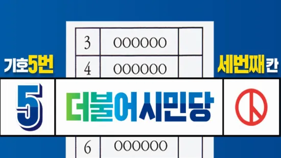

2020년 21대 총선 후 더불어시민당 해산을 앞둔 어느날 당대표의 메시지

더불어시민당 당원 감사의 글
사랑하는 당원동지 여러분
동지들께서 그동안의 보내주신 열정과 헌신이 새로운 정치, 새로운 시대를 개막하고 있습니다.
진심으로 고맙습니다.
끝이 아니라, 이제 다시 시작입니다.
미처 다하지 못한 개혁과제들이 여전히 우리 앞에 남아 있습니다.
검찰개혁과 사법개혁으로 국민 누구에게나 공정하고 평등한 법의 가치를 정립해야 합니다.
바른 언론이 나갈 길을 밝혀 정직한 나라를 세워야 합니다.
정쟁이 아닌 정책으로 토론하고 소통과 대화를 통해서 국민을 위해 함께 일하는 성숙한 정치 문화의 국회를 만들어야 합니다.
더불어시민당은 이제 시민개혁진영의 승리라는 시대적 소명을 다하고 국민을 위한 통합의 길에 함께할 것입니다.
광화문을 가득 채웠던 촛불시민의 뜨거운 꿈의 실현을 위해 국민의 나라, 정의로운 대한민국을 위해 하나 된 마음으로 나아갑시다.2020년 4월 16일
더불어시민당 당대표 우희종 당대표 최배근
합당을 맞이하며
더불어시민당 당원 동지여러분 당대표 우희종입니다.
예상하지 않았던 코로나사태 등의 힘든시기속에 짧았지만 길었던 시간을 보내고 오늘 더불어시민당과 더불어민주당이 함께하는 자리에 이르렀습니다.
무엇보다 일반시민들이 적폐청산 일념으로, 촛불정부를 뒤흔들며 문재인 대통령의 개혁의지를 방해하려는 세력에 대하여 단호히 일어섰습니다. 이는 4.19혁명과 5.18항쟁의 시민정신 속에서 박근혜정부를 몰락시킨 광화문 촛불의 연장이었습니다.
더불어시민당의 태동은 1월이었고, 2월에 준비해 3월에 당을 만들어 총선을 치렀습니다. 하루 2-3시간 잠자며 정신없던 당시를 생각하면 다시는 못할 것 같습니다만, 이번 경험을 통해 더불어시민당의 2만여 당원들은 건강한 사회를 위해서라면 언제고 정치 현장의 주체로 나설 수 있음을 각자의 피와 뼈로 체화할 수 있었습니다.
당적을 바꿔 낯선 더불어시민당에 와서 함께 해준 이종걸, 제윤경, 정은혜, 이훈, 심기준, 이규희, 신창현, 윤일규 의원님과 제대로 된 틀도 없는 곳에서 고생하신 당직자 여러분의 노고에 감사드립니다.
한편, 이런 과정을 통해 분명히 알게 된 것은 다음 두 가지였습니다.
첫째는 정치인이나 유명인이 아닌 평범한 시민이 정치주체로 나설 수 있다는 것이고, 둘째는 기존 정치문법에 안주하지 않고 자기 변화를 위해 노력하는 집권여당의 모습이었습니다. 민주당의 이런 변화의 이면에는 이해찬대표님의 확고한 의지가 있음도 확인할수 있었습니다. 더불어시민당이 자신감을 갖고 미래통합당의 의도를 막을 수 있도록 함께 해준 모든 분들의 열정과 노고, 전 과정에 대한 것은 향후 백서를 통해 기록으로 남기겠습니다.
이제 더불어시민당은 출범 취지에 맞춰 더불어민주당과 합당함으로써 그 맡은 바 소임을 다하고 역할을 끝냅니다. 우리 당의 당선인들이 민주당의 넉넉한 품에서 각자의 역량을 충분히 발휘할 수있기를 부탁드립니다.
사회가 변하고, 시민들의 정치의식이 높아지며, 국내 정치문화도 한층 높아져 가고 있습니다. 깨어있는 시민의 열정과 민주당의 개혁 의지가 하나되어,‘호시우보’의 자세로 나아갈 때 우리 사회의 적폐청산은 반드시 이뤄질 것을 확신합니다. 우리모두 각자 제 자리에서 마음을 모아 사람사는 사회를 향해 굳건하게 나아갑시다.2020. 5. 13
더불어시민당 대표 우희종
【참고자료】
- 2020년 4월 16일, 5월 13일 문자 수신